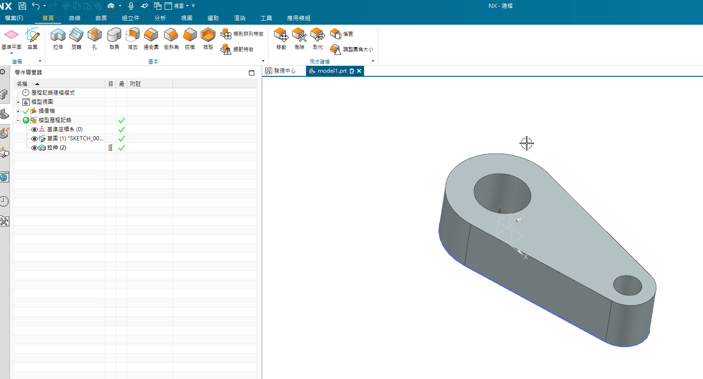

w11s2 <<
Previous Next >> 46號
29號
w6:
blog部分有已經完成,如實體網址:https://40923129.github.io/cd2022/blog/index.html
心得:在製作blog-w6至w8,讓我學習到路徑與整合的重要性
w7:
心得:目前我負責nx2022,本節課程還未完成,但已經熟悉了.
w8(midterm):
ag3分配:
NX: 40923111、40923122、40923146
Onshape: 40923115、40923114、40923129
Solvespace: 40923148、40923209
流程:
1.至w8任務頁面下載零件檔。
2.使用已分配的繪圖程式將零件繪出。
3.將零件檔轉為dwg檔，使用AutoCAD確認尺寸
4.繪製零件
5.將零件檔結合輸出成組合圖.STL。
6.將已繪製好的組合圖匯入 CoppeliaSim。
7.嘗試使用 CoppeliaSim設定並操作前三軸.
心得:
這次w8測驗中使用onshape進行繪製,雖然有不懂的地方,但我都會請教同學
w10:
心得:在製作方形的過程中輸入正確的程式碼,並配合ui去做更改讓我學到很多
WINK:
# 導入 NXOpen
import NXOpen
import NXOpen.UF
import NXOpen.Gateway
def main():
# 取得目前開啟的工作階段
theSession = NXOpen.Session.GetSession()
theUfSession = NXOpen.UF.UFSession.GetUFSession()
# 建立 ListingWindow
listWin= theSession.ListingWindow
# 開啟零件檔案
basePart1 = theSession.Parts.OpenBaseDisplay("C:/mdecycu/cd2022_guide/downloads/w11_ajax/block.prt")
workPart = theSession.Parts.Work
unit1 = workPart.UnitCollection.FindObject("MilliMeter")
# height
p7 = workPart.Expressions.FindObject("p7")
# width
p8 = workPart.Expressions.FindObject("p8")
# length
p9 = workPart.Expressions.FindObject("p9")
workPart.Expressions.EditWithUnits(p7, unit1, "30")
workPart.Expressions.EditWithUnits(p8, unit1, "60")
workPart.Expressions.EditWithUnits(p9, unit1, "90")
theSession.UpdateManager.DoUpdate(0)
#saveStatus1 = workPart.SaveAs("c:/tmp/block_new.prt")
#saveStatus1.Dispose()
# initialize list to hold bodies
theBodyTags = []
for x in workPart.Bodies:
if x.IsSolidBody:
theBodyTags.append(x.Tag)
# 準備輸出 ASCII 格式 STL 零件檔案
sTLCreator1 = theSession.DexManager.CreateStlCreator()
sTLCreator1.AutoNormalGen = True
sTLCreator1.ChordalTol = 0.08
sTLCreator1.AdjacencyTol = 0.08
sTLCreator1.OutputFile = "C:/mdecycu/cd2022_guide/downloads/w11_ajax/block_ascii.stl"
# Binary STL: NXOpen.STLCreatorOutputTypeEnum.Binary
sTLCreator1.OutputType = NXOpen.STLCreatorOutputTypeEnum.Text
# 已知 body1 命名
body1 = workPart.Bodies.FindObject("EXTRUDE(2)")
added1 = sTLCreator1.ExportSelectionBlock.Add(body1)
nXObject1 = sTLCreator1.Commit()
sTLCreator1.Destroy()
# 開啟所建立的 ListingWindow
listWin.Open()
listWin.WriteLine("number of solid bodies: " + str(len(theBodyTags)))
(massProps, Stats) = theUfSession.Modeling.AskMassProps3d(theBodyTags, len(theBodyTags), 1, 4, .03, 1, [0.99,0.0,0.0,0.0,0.0,0.0,0.0,0.0,0.0,0.0,0.0])
listWin.WriteLine("units: kg, mm")
listWin.WriteLine("surface area: " + str(massProps[0]))
listWin.WriteLine("volume: " + str(massProps[1]*1E9))
# 在 ListingWindow 中寫入字串
listWin.WriteLine("Hello, NXOpen")
listWin.Close()
# 將零件檔案 fit 之後, export 出 png 檔案
# 假如開啟 NX GUI 後執行 互動模式 1
'''
theUI = NXOpen.UI.GetUI()
imageExportBuilder1 = theUI.CreateImageExportBuilder()
custombackgroundcolor1 = [None] * 3
custombackgroundcolor1[0] = 1.0
custombackgroundcolor1[1] = 1.0
custombackgroundcolor1[2] = 1.0
imageExportBuilder1.SetCustomBackgroundColor(custombackgroundcolor1)
imageExportBuilder1.FileFormat = NXOpen.Gateway.ImageExportBuilder.FileFormats.Png
imageExportBuilder1.FileName = "C:/mdecycu/cd2022_guide/downloads/w11_ajax/block.png"
imageExportBuilder1.BackgroundOption = NXOpen.Gateway.ImageExportBuilder.BackgroundOptions.Original
imageExportBuilder1.EnhanceEdges = False
imageExportBuilder1.RegionMode = False
# fit view 後 commit export png
workPart.ModelingViews.WorkView.Fit()
nXObject6 = imageExportBuilder1.Commit()
imageExportBuilder1.Destroy()
# 互動模式 2
# https://docs.plm.automation.siemens.com/data_services/resources/nx/11/nx_api/custom/en_US/nxopen_python_ref/NXOpen.UF.Disp.CreateImage.html?highlight=createimage
workPart.ModelingViews.WorkView.Fit()
disp = theUfSession.Disp
screenshotPath = "C:/mdecycu/cd2022_guide/downloads/w11_ajax/block"
png = NXOpen.UF.DispImageFormat.PNG
white = NXOpen.UF.DispBackgroundColor.WHITE
disp.CreateImage(screenshotPath, png, white)
'''
# 無 GUI 互動模式導出零件 .jpg
# https://docs.plm.automation.siemens.com/data_services/resources/nx/10/nx_api/en_US/custom/nxopen_python_ref/NXOpen.UF.Disp.BatchShade.html
workPart.ModelingViews.WorkView.Fit()
disp = theUfSession.Disp
screenshotPath = "C:/mdecycu/cd2022_guide/downloads/w11_ajax/block.jpg"
method = NXOpen.UF.DispShadeMethod.GOURAUD
disp.BatchShade(screenshotPath, 1920, 1080, method)
if __name__ == "__main__":
main()
W11:
整合過程:
Copyright © All rights reserved | This template is made with by Colorlib